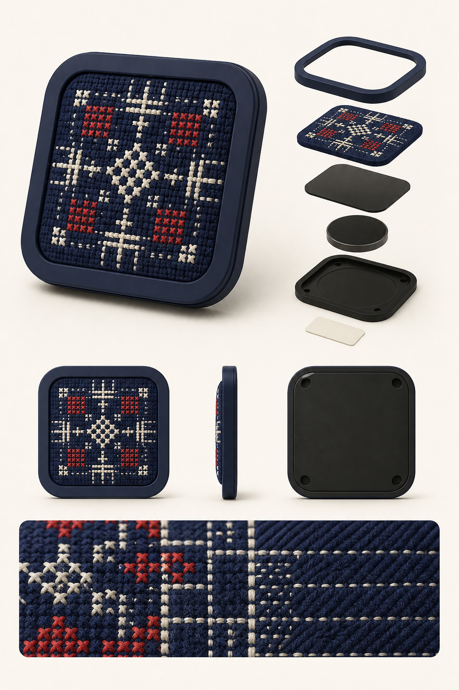
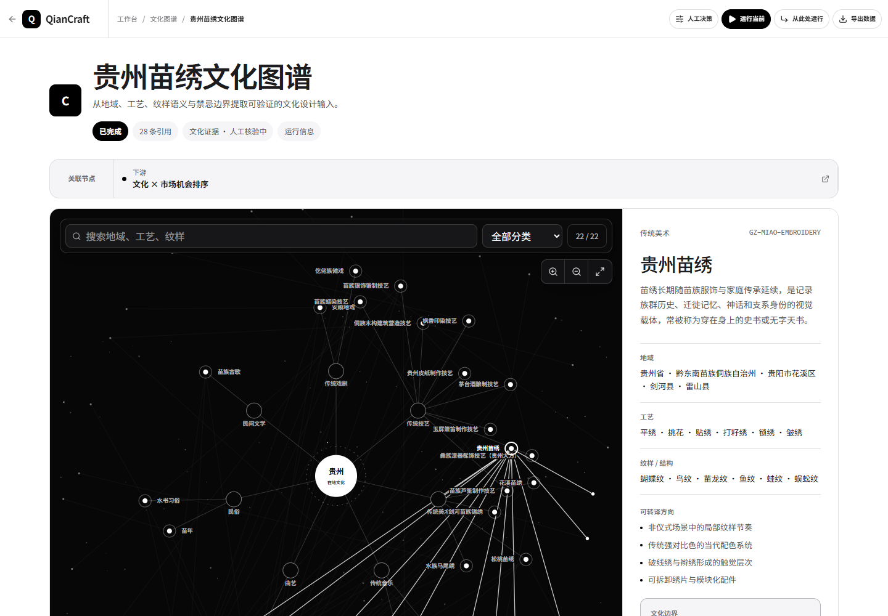
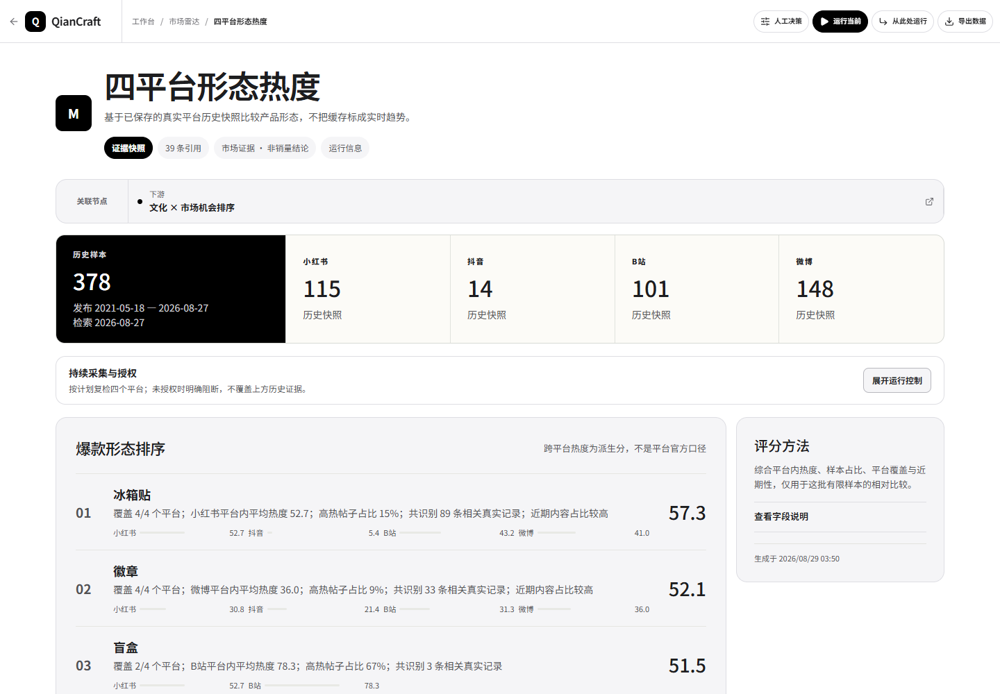
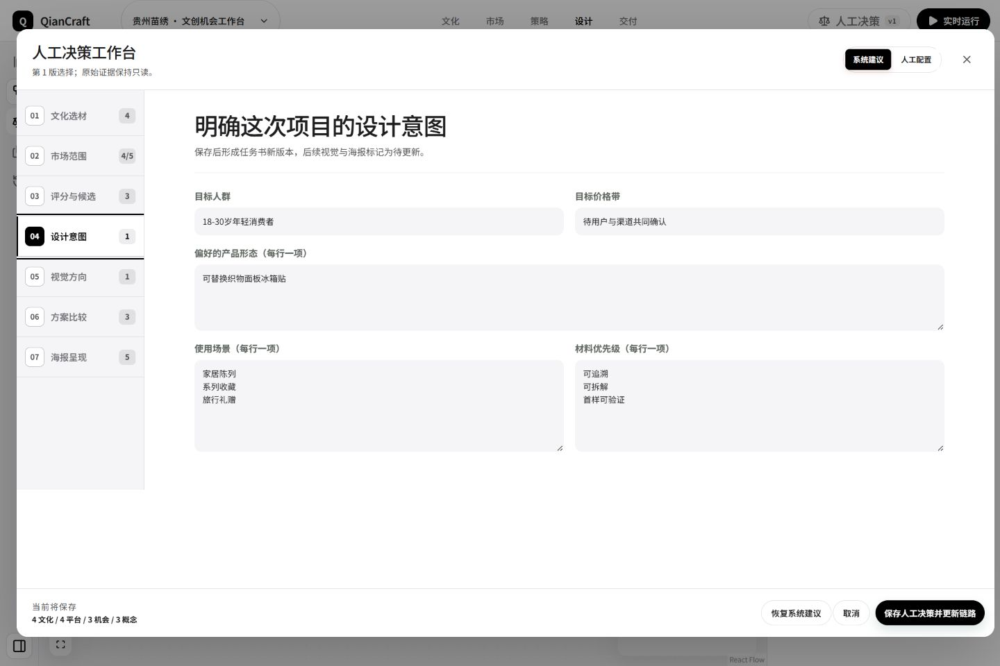
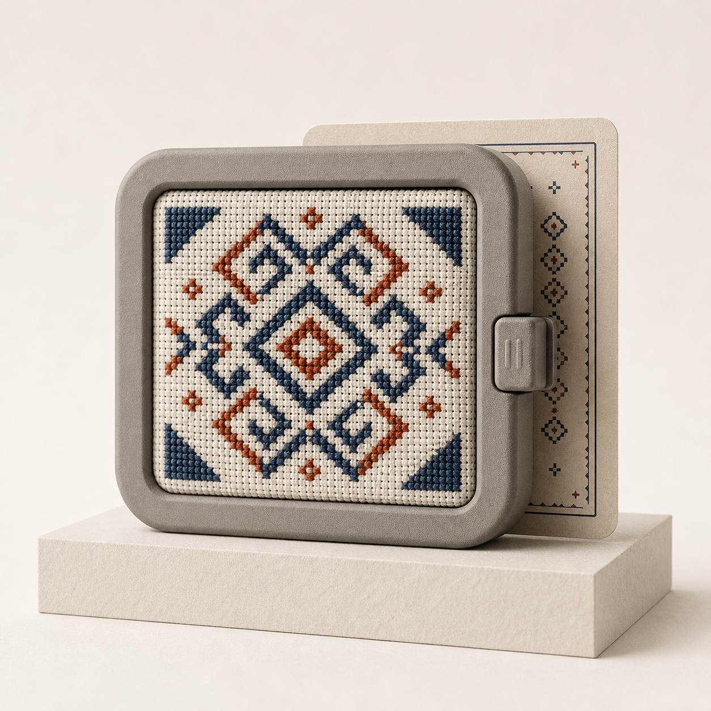
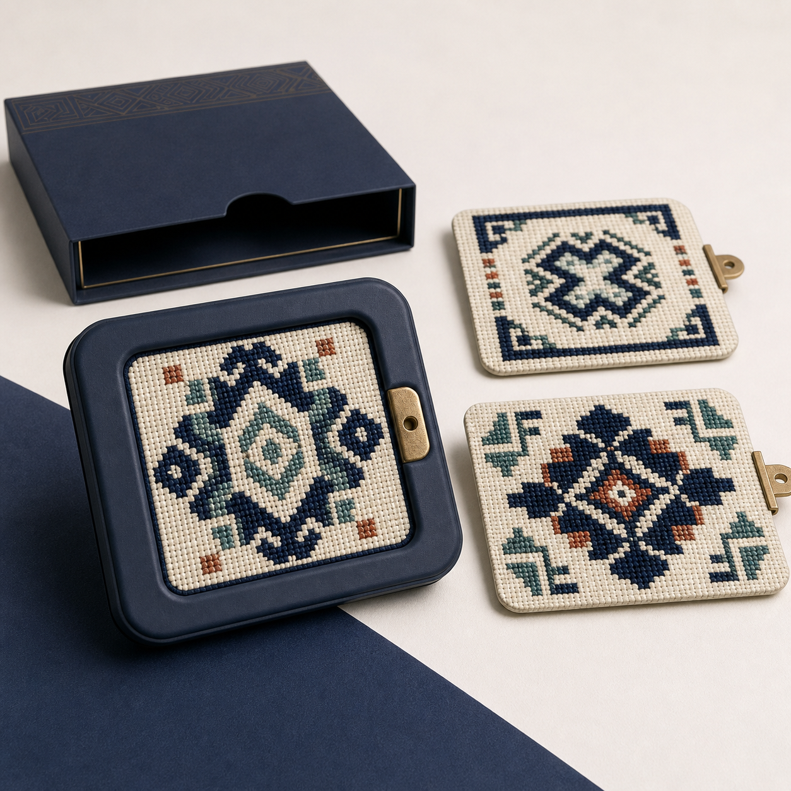
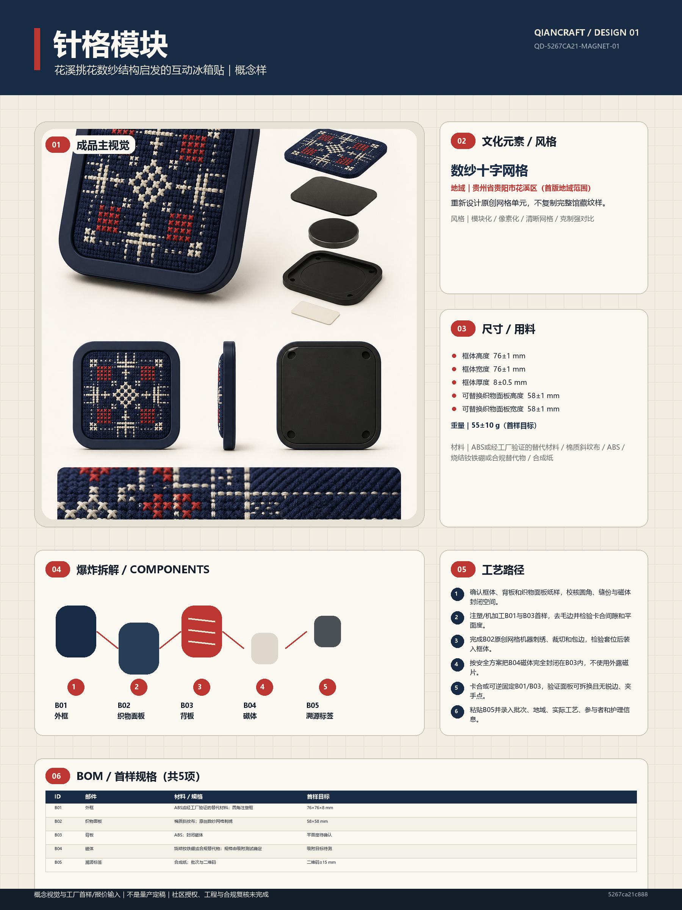

用证据、设计与人的判断，让传统有出处、创新有根，并以被尊重的方式走进当代生活。

每一步都能回看输入、状态、来源和人的选择。
保留地域、工艺与语境差异
统一字段，只比较有限历史样本
双证据引用 + 六维评分 + 风险扣分
人可以调范围、权重、任务书与概念
DesignPackage、首样拆解与概念海报
文化图谱不是素材库，而是一道防止混用、误读和越界的设计门。

已核验结构化文化记录；事实字段能回到来源。
文化、伦理、法律与馆藏视觉登记来源；候选不会自动晋级。

系统提供可解释的起点，人仍然可以改变范围、权重、任务书和最终方向。

不是一次生成就定案，而是把差异放到同一个工作台里比较。



概念样我们想让人看见图案背后的地域、技艺、人与故事。
让传统被看见 · 让出处被尊重 · 让创新有根